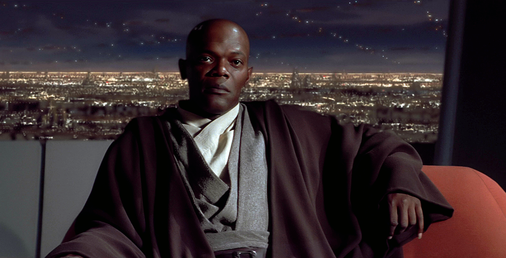

La película de Wonder Woman por primera vez llevará a la heroína a la Primera Guerra Mundial
Este año, en Batman v Superman: Dawn of Justice, será la primera vez que veamos a la actriz Gal Gadot dando vida a la nueva Wonder Woman. No obstante, en 2017 tendrá su propia película, que contará el origen de esta heroína y su conexión con los hombres mortales, y se desarrollará durante la Primera Guerra Mundial, y no durante la Segunda, como cuenta la historia original de DC.
El actor Chris Pine, quien tendrá un papel importante en la película, ha confirmado que esta vez Warner Bros ha decidido llevar el origen de la Princesa Diana de las Amazonas a la Primera Guerra Mundial. El actor comentó en una entrevista:
“Es un período temporal que no vemos muy seguido en la gran pantalla, dado que normalmente todas las películas, y las historias de Wonder Woman, hablan de la Segunda Guerra Mundial. El diseño de nuestro vestuario es increíble. Tenemos escenas con más de 500 extras vestidos con ropaje tradicional de la época. En general, nunca había estado en una película con un reparto de extras tan cuidado y detallado.”
Además, Pine también habla acerca de su personaje, Steve Trevor, quien tendrá un acercamiento romántico a Wonder Woman:
“Steve [Trevor] es una persona arriesgada, aventurar, cínica y realista, quien ha visto la naturaleza brutal de la civilización moderna. Es un tipo que habla mucho y es encantador, por lo que aportará mucho para que la película sea divertida. Aún así, al personaje lo rodean ciertos temas morales y profundos que lo ahcen mucho más interesante.”
Es curioso todo lo que implica el cambiar de período temporal a la historia de Wonder Woman, sobre todo al abandonar una guerra que presenta la posibilidad de una trama tan “sencilla” como la Segunda Guerra mundial. Y es que como dicen nuestros compañeros de io9, es sencillo meter a un superhéroe en la historia de la Segunda Guerra Mundial, en la que hay un villano como los nazis que debe ser detenido. Pero la Primera Guerra Mundial se movió gracias a la avaricia y la ambición de conquistar tierras por parte de muchos países, lo que la hace moralmente más complicada. Cuando la Princesa Diana llegue de Temiscira, no le será fácil entender qué está pasando, ni quién es el villano que debe combatir.
Wonder Woman se estrena en cartelera el 23 de junio de 2017, pero podremos ver a la heroína por primera vez en Batman v Superman: Dawn of Justice el 25 de marzo de este año.
Lo digo desde este artículo porque es de las pocas películas que no me importa, pero os estáis pasando de rosca con los spoilers. Es que ya lo ponéis hasta en el título. Entre batman, suicide squad y Star Wars os estáis luciendo...
Estamos estirando un poco mucho el significado de “spoiler” no? Porque vamos, no creo que sea muy fácil ocultar que se desarrolla en la primera guerra mundial en cuanto salgan las primeras imágenes promocionales y el trailer o incluso el teaser... si quieres estar a salvo de estos terribles spoilers que tu dices, lo ideal es planear tu propio secuestro a seis meses / un año vista y que te liberen en una sala de cine unos minutos antes de empezar la película.
Samuel L. Jackson recomienda a los actores de The Force Awakens dar clases de sable láser

Samuel L. Jackson no es un actor de Star Wars cualquiera. Es el maestro Jedi que abrió la veda de los sables láser de colores cuando exigió que el suyo fuera de color púrpura. Con esos antecedentes, su opinión sobre The Force Awakens era una de las más esperadas. Lamentablemente, parece que el nuevo film no le ha gustado mucho.
En una entrevista concedida a la cadena ABC, el actor ha comentado la nueva entrega de la saga entre dientes. Este es el vídeo, y debajo una transcripción de sus palabras.
-Has visto la nueva película?-
-Sí...-
-¿Y bien?-
-Es acorde al espíritu de las películas de Star Wars-
-¡Wow! Esa es una respuesta bastante diplomática-
-Bueno, ya sabes. Es una película de aventuras. Es excitante a su manera. Creo que los chicos deberían ir a la escuela de lucha con sables láser, pero ya sabes...-
-Bueno, pero ganaron...-
-¡Tuvieron tiempo para haberlo hecho mejor!-
No se puede decir que se haya despachado a gusto, pero algo en la pose de Jackson y en su expresión deja entrever que The Force Awakens le ha gustado más bien poco. Su opinión es tan válida como cualquiera, pero quizá hay que recordarle al bueno de Mace Windu que ellos luchaban mejor con el sable láser precisamente porque tenían una academia. Pese a ello, tuvieron a un maestro sith debajo de sus narices durante años y nadie se dio cuenta hasta que fue demasiado tarde.
Cuenta la historia, por cierto, que Samuel L. Jackson pidió a Lucas que su sable láser fuera púrpura para poder ubicarse mejor en mitad de la masiva batalla Jedi de Geonosis. Cuando Lucas le explicó que los Jedi llevan sables de color verde y los Sith de color rojo, Jackson replicó algo como: “No me importa. Soy el segundo Jedi más calvo inmediatamente por debajo de Yoda y quiero un sable láser púrpura.” Genio y figura.
La verdad que no me gusto cono manejan el sable. La premisa de Lucas era que un sable es tan potente que”pesa” muchisimo de ahi el como lo manejaba luc en el ep 6 como si pesara lo menos 15 kg . En la nueva se han olvidado de eso.
Un momento, quiere eso decir que en las precuelas los sostenian mejor? recuerdo que en la mayoria de las escenas de la batalla de geonosis habian jedis que incluso los manejaban como si tuvieran un palo de madera entre las manos.
¿Qué es en realidad el polvo blanco que esnifan los actores en las películas?
En muchas películas y series de televisión hemos visto como criminales y drogadictos esnifan un polvo blanco que simula ser cocaína, una de las drogas más dañinas en el mundo. Pero, si no es la conocida droga, ¿qué es en realidad ese polvo blanco? La respuesta es más sencilla de lo que podrías imaginar.
El “polvo blanco” que en el cine y la televisión hacen pasar por cocaína es simplemente eso, un “polvo blanco”. La idea de los especialistas en efectos especiales y utilería de cine es utilizar un polvo que no sea dañino y que puedan esnifar por la nariz los actores sin ningún tipo de riesgo, y normalmente lo que suelen usar es un suplemento alimenticio común.
Ken Finn, un experto en utilería y la fabricación de drogas falsas para películas, ha comentado en una entrevista con Hopes & Fears que el polvo blanco en la gran mayoría de los casos no es más que Inositol, un complejo alimenticio bastante conocido y utilizado en un sinfín de productos. De hecho, comenta que si lo esnifas lo más seguro sentirás un sabor en tu garganta que se hace familiar.
“Durante años hemos experimentado y no sirve cualquier polvo blanco. El azúcar en polvo, por ejemplo, es muy pegajosa, mientras que la harina forma grumos, lo que resulta extremadamente incómodo para el actor. Por ello desde hace décadas usamos Inositol, un complejo de vitamina B. De hecho, durante mi investigación descubrí que algunos narcotraficantes cortan [o mezclan] la cocaína con este compuesto para rendirla más.”
El Inositol es el reemplazo perfecto para aparentar que nuestros actores favoritos están consumiendo cocaína, en momentos como este:
Así que si siempre tuviste la duda de qué usaban en el cine para crear “cocaína falsa”, ya lo sabes.
Eso sí, Finn asegura que en algunos casos (sin mencionar nombres involucrados) actores han solicitado que les consigan “la sustancia real”, para poder aguantar luego de días filmando por 10 horas al día. Pasa poco, pero pasa. Lo que no deja claro con su comentario polémico es si el equipo de producción les facilita la droga o qué.
Mítica la escena de SCARFACE, que subidón el juego de Xbox (la clásica)... que empezaba con un ‘final alternativo’
“Complejo de vitamina B”. Como aficionado a las bebidas energeticas, con su mezcla de vitaminas B entre otros productos... Tiene algun efecto acelererante el Inositol ? o es de bajo nivel como la rivoflamina del los cacaos?